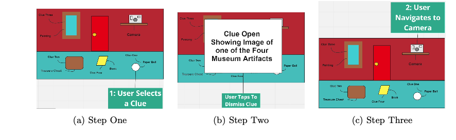
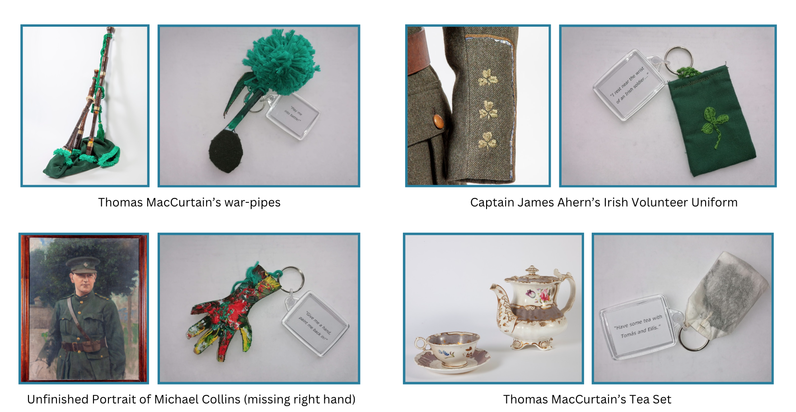
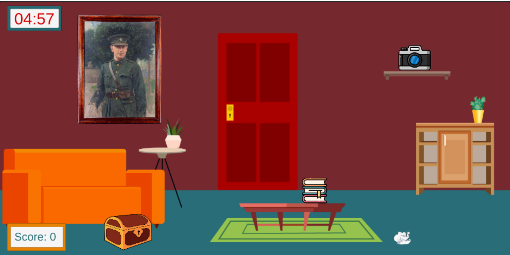
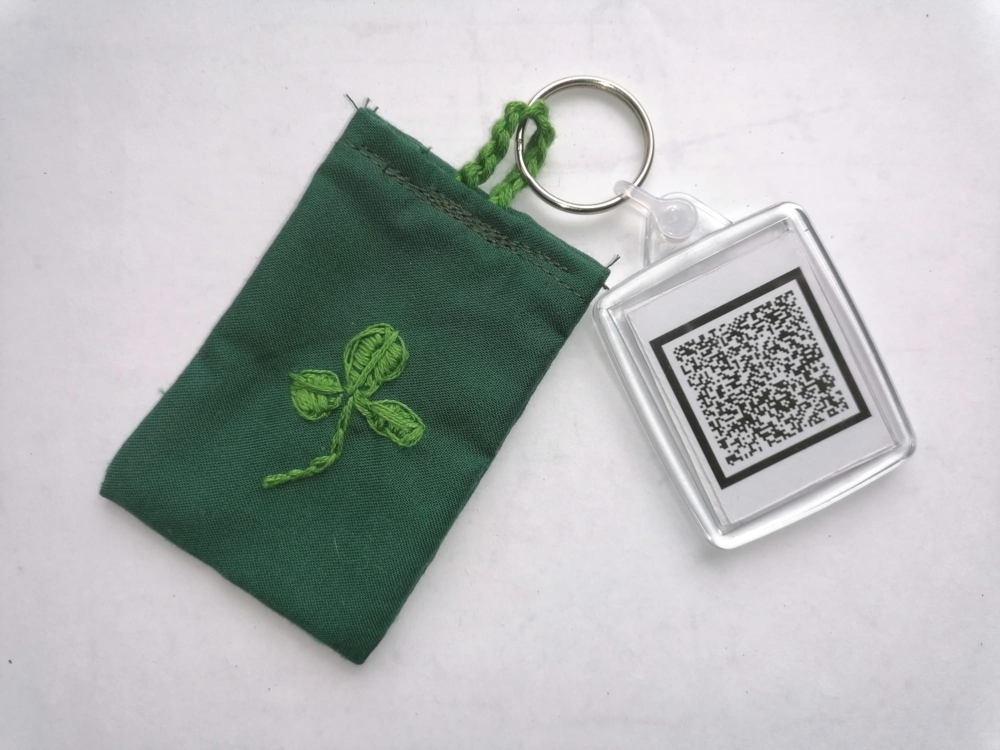
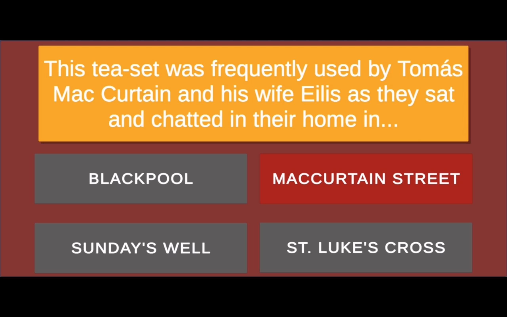
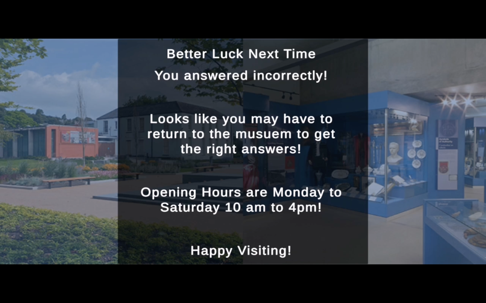
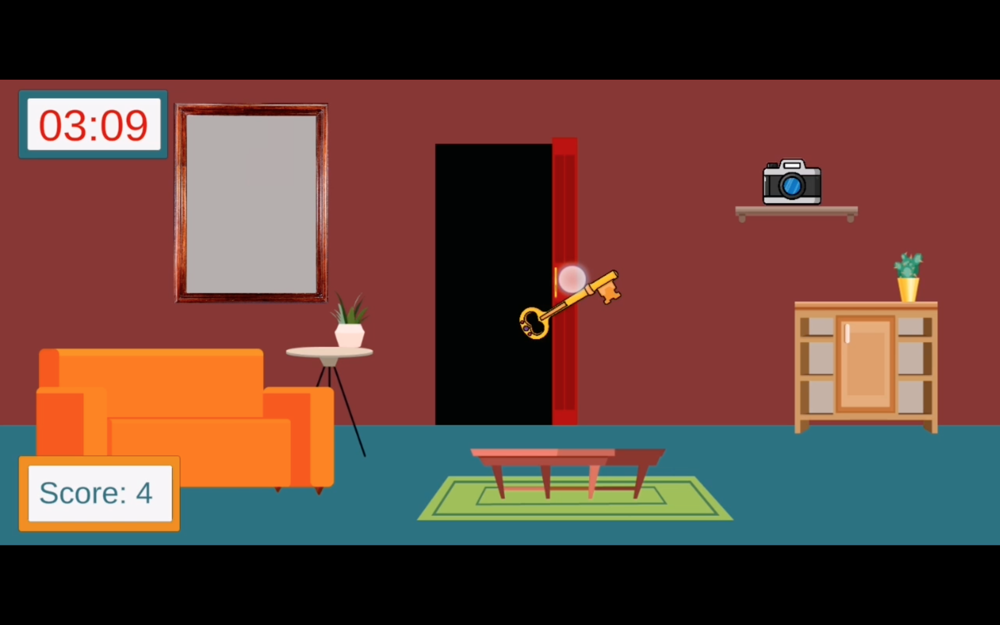

A Post-Visit Tangible Escape Room with AR for Mobile.
Escape The Museum is a post-visit mobile escape room app developed for
the Cork Public Museum, combining Augmented Reality (AR) with tangible
elements, for primary school children.
Escape The Museum: Main Interface
The Problem
The Cork Public Museum, like many museums, faces challenges in
sustaining visitor engagement both during and after their visit,
particularly among younger audiences. The post-visit phase
presents significant potential for enhancing engagement, yet
current tools are generally static and lack the interactivity
needed to foster an ongoing connection with visitors.
This gap offers a valuable opportunity to strengthen engagement
by focusing on the post-visit experience and introducing an
interactive tool that keeps visitors connected long after they
leave. Addressing this need could not only encourage return
visits but also establish a model for similar institutions.
The Goal
The goal was to create an engaging, interactive post-visit app
that bridges the on-site and post-visit experience. Designed as
a fun, game-like tool, the app aims to enhance on-site
engagement, sustain interest after the visit, and encourage
visitors to return.
The Process
To develop this concept, I conducted user research, including
curator interviews, on-site observations, and a comprehensive
literature review of prior work. The insights were synthesised
and prioritised using affinity mapping and MoSCoW prioritisation
to define key design requirements.
Early design concepts were shaped with low-fidelity sketches and
user flow diagrams, leading to an interactive prototype built
with Unity and Vuforia. This prototype underwent evaluative
testing, revealing several areas for further development.
UX Design Process
Research
Research Gap
A literature review highlighted a clear gap: the need for a dynamic,
interactive post-visit tool in museums. While the post-visit phase
has untapped potential to boost visitor engagement, existing tools
mainly focus on either interactive on-site experiences or static
post-visit resources. This reveals a distinct opportunity for a more
engaging, interactive solution specifically aimed at the post-visit
experience.
Approach and Methods
To ensure credible findings, I applied triangulation—combining
curator interviews, on-site observations, and academic research
to identify patterns and solidify insights. This triangulated
approach grounded the design decisions in comprehensive research
and cross-referenced data.
Analysis
Techniques: Affinity Mapping and MoSCoW Prioritisation
Using affinity mapping and MoSCoW prioritisation, I organised
the research data into several key design requirements that
guided the final design.
Key Findings: Primary Design Requirements
The design should aim to fulfil the following objectives:
1.
Bridge The Gap Dynamically
Integrate interactive elements that connect the on-site and
post-visit experiences.
2.
Encourage On-Site Exploration
Foster exploration to enhance engagement and make the museum
visit more interactive and memorable.
3.
Reinforce Visitor Memory
Strengthen visitors' memories of their experience to build
emotional connections, promote return visits, and deepen
engagement.
4.
Minimise Distractions On-Site
Ensure visitors remain focused on exhibits, enhancing immersion.
5.
Ensure Cost-Effectiveness
Keep costs low for both the museum and visitors, as it is a
small, locally-funded institution with free public access.
6.
Include a Challenge
Add a game element to make the experience impactful for
children, with an interactive, competitive component likely to
engage them more effectively.
Design
Design Concept Overview
To create an engaging, interactive post-visit experience for
primary school children, Escape The Museum was designed to meet
the key requirements identified above. Each design decision was
aligned with the goal of bridging the on-site and post-visit
experiences to enhance engagement, sustain interest, and encourage
return visits.
Escape The Museum spans two stages: it begins during the museum
visit, where children receive tangible clues to locate specific
artefacts, sparking curiosity and interaction with the exhibits.
At home, these items unlock features in a mobile AR escape room
game, blending physical and digital interactions to reinforce
memories, deepen connections with museum content, and keep young
visitors engaged long after their visit.
User Journey Mapping
To ensure a seamless transition from the museum visit to the app
experience at home, I mapped the user journey, focusing on how
the tangible clues collected on-site would guide children’s
interactions within the app. This mapping helped align each
phase of the experience to maintain engagement and support
memory retention.
User Journey
App User Flow
The app flow was developed through storyboards, which helped
visualise and refine the sequence of interactions, ensuring an
intuitive, engaging experience for young users.
Sketches and Prototyping
Early sketches and wireframes helped shape a user-friendly
layout that would appeal to young users, supporting intuitive
navigation and interaction.
These initial designs facilitated rapid iteration, leading to a
clear, engaging interface aligned with the app’s educational
goals.

Wireframes
Prototyping and Implementation
The app was developed using Unity for its robust game development
features, ideal for a smooth and engaging mobile experience, and
Vuforia to enable AR functionality. Unity’s flexibility supported the
app’s 2D game components, while Vuforia provided AR features that
enhanced the interactive elements.
Final Prototype: Main Interface
Design Solutions Breakdown
The design solutions directly address the museum’s primary needs of
connecting the on-site and post-visit phases, enhancing engagement,
encouraging exploration, reinforcing memory, and being budget-friendly
for a small, publicly funded institution.
On-Site to Post-Visit Experience
Visitors begin by collecting clues in the form of four tangibles
and instructions. This on-site task encourages exploration by
guiding them to specific artefacts, enhancing interaction with the
exhibits and creating memorable learning moments.
Post-visit, they open the app and scan AR codes on the tangibles
to unlock digital game features, bridging on-site and digital
experiences in a dynamic, engaging way that sustains their
interest even after leaving the museum.
Tangibles
Each tangible is a low-fidelity, hand-made item resembling a
specific museum artefact, designed to bridge the on-site and digital
experiences. Grounded in academic research on tangible interaction
as a proven way to engage younger children, these items act as clues
on-site and serve as AR keys in the post-visit app, extending the
museum experience through hands-on interaction.
Created as static, low-distraction items, the tangibles allow
children to focus on exhibits without detracting from the
experience. Their resemblance to the artefacts reinforces memories
of the visit, supporting learning through digital interaction at
home. Cost-effective and simple to produce, they offer the museum an
affordable way to create a meaningful connection with visitors.
Together, these tangibles make the museum visit more interactive and
memorable while remaining budget-friendly for the museum.

Anatomy of a Tangible
Tangibles include:
Material Token: A crafted miniature resembling
the artefact, reinforcing its significance through touch.
Cryptic Clue: A text hint guiding children to
locate the artefact in the museum, encouraging exploration.
AR Code: Links the tangible to app features,
integrating digital interactivity with the physical museum
experience.
Post-Visit App Features
The app further sustains engagement with an escape-room-style
game, fostering ongoing interaction in a playful, competitive way,
accessible directly on visitors' own mobile devices, ensuring
cost-effectiveness by eliminating the need for extra equipment.
App Interface Design
A cartoon-style 2D room with hidden clues, interactive furniture,
and a camera for AR mode provides a vibrant, intuitive layout that
keeps children engaged.

AR Feature
The camera enables users to scan tangible AR codes to access
artefact-related quiz questions, linking physical items to digital
content and reinforcing the museum experience.

Quiz
Each AR code scan prompts a quiz question. Correct answers allow the
user to continue through all questions, while incorrect answers lock
the game, encouraging a museum revisit.


Escape Mechanism
Solving all four clues provides a virtual key, allowing players to
“escape” and complete the game in a satisfying way, further
encouraging participation.

Timer And Scoreboard
A 5-minute countdown and scoreboard add a competitive edge,
motivating players to improve their scores with each play.
Evaluative Testing
User Feedback
At the Cork Public Museum, two parents and a speech and language
therapist participated in usability tests, completing on-site
activities and post-visit app interactions to evaluate the
experience’s usability and engagement through observational feedback
and interviews.
1.
Tangibles’ Effectiveness
Engaging and bridges the on-site and post-visit experience;
however, some found them bulky.
2.
Engagement Across Visits
Effective, though quiz content could be simplified for younger
children.
3.
Home Environment Constraints
Distractions at home impacted app focus.
4.
Player Lockout
Lockout feature was occasionally frustrating
Further Development
Based on user feedback, I identified several key areas for future
development:
1.
Tangibles
Redesign for compactness and durability.
2.
Engagement
Simplify quiz questions for younger users.
3.
Home Constraints
Explore platform integration with existing gaming habits.
4.
Player Lockout
Consider positive reinforcement instead of lockout to promote revisits.